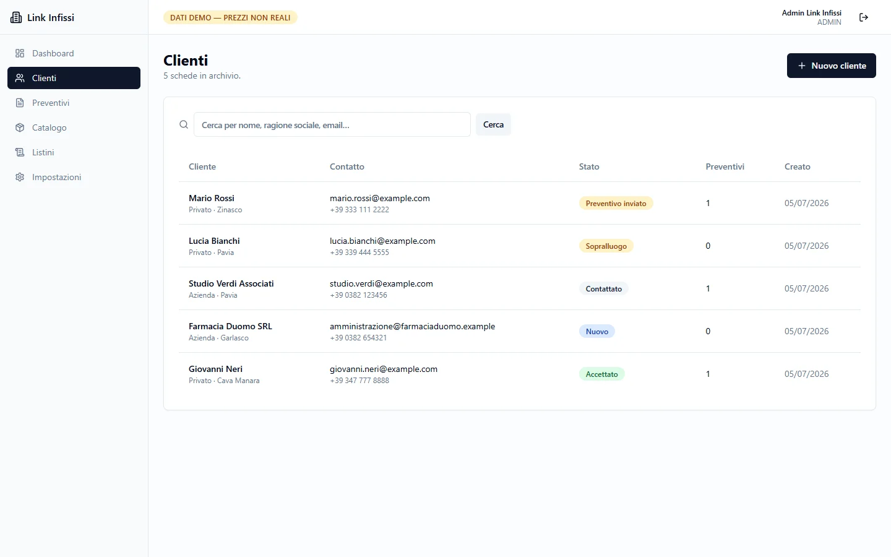
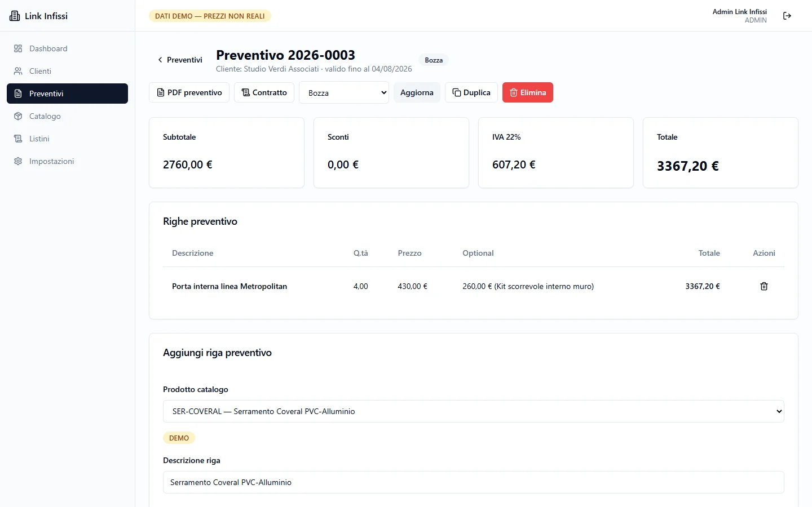
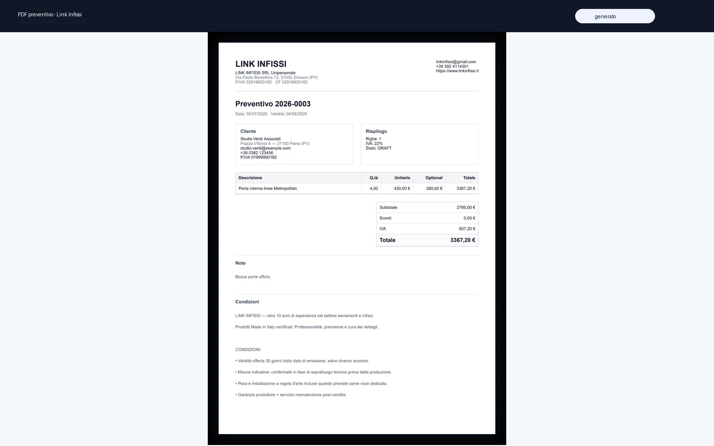

Un gestionale che segue il ciclo commerciale reale.
Per Link Infissi abbiamo costruito una piattaforma web interna: anagrafiche clienti, catalogo prodotti,
listini, preventivi e generazione PDF. Tutto in un'unica dashboard pensata per chi vende serramenti.
Serramenti & InfissiGestionale webPreventivi & PDFApp web su misura
Excel, fogli sparsi e preventivi riscritti ogni volta.
Link Infissi gestiva clienti, listini e preventivi con strumenti separati. Il risultato: dati duplicati,
preventivi lenti da preparare e poca visibilità sullo stato commerciale.
Serviva uno strumento unico, accessibile da browser, che partisse dalla scheda cliente e arrivasse
fino al PDF del preventivo senza cambiare applicazione.
Scheda 02 · La soluzione
Cosa abbiamo costruito.
Anagrafiche
Anagrafiche clienti e stati commerciali
Ogni cliente ha una scheda completa con contatti, indirizzo, tipo (privato o azienda) e stato del rapporto commerciale. La lista mostra in un colpo d'occhio quanti preventivi sono attivi per ciascun cliente.
clienti · anagrafiche

preventivi · dettaglio

Preventivi
Preventivi collegati al catalogo
Le righe del preventivo si compilano pescando dal catalogo prodotti. Il sistema calcola subtotale, sconti, IVA e totale. Ogni preventivo ha uno stato chiaro: in bozza, inviato, accettato.
Documenti
PDF professionale in un click
Dal preventivo si genera un PDF con intestazione aziendale, dati cliente, righe prodotto, riepilogo economico e condizioni. Pronto per essere inviato al cliente.
pdf · preventivo

Scheda 03 · Il cambiamento
Da fogli sparsi a flusso commerciale sotto controllo.
Il gestionale non sostituisce l'esperienza del venditore: la rende più veloce e meno esposta a errori.
Ogni preventivo ha una storia, ogni cliente uno stato, ogni listino una fonte unica di verità.
Prima · dati sparsi su Excel e mail
Dopo · un'unica anagrafica cliente
Contatti, storico preventivi e stato commerciale consultabili in un'unica schermata.
Prima · preventivi manuali e ricalcolati
Dopo · preventivi collegati al catalogo
Righe, prezzi, sconti e IVA si aggiornano automaticamente partendo dal listino caricato.
Prima · documenti creati a mano
Dopo · PDF professionale in un click
Layout aziendale, riepilogo economico e condizioni: pronto per l'invio al cliente.
dashboard · kpi
Dashboard: tutto il ciclo commerciale a colpo d'occhio
clienti · lista
Clienti: stato e contatti sempre a portata
preventivo · righe
Preventivo: righe, sconti e IVA automatici
Scheda 04 · Sotto il cofano
Stack & approccio
Applicazione web moderna con autenticazione, database relazionale e generazione PDF lato server. L'interfaccia è minimal e veloce perché chi la usa ha bisogno di produrre, non di imparare un software.
Utilizziamo i cookie per migliorare la tua esperienza di navigazione e analizzare il traffico del sito. Cliccando «Accetta tutti» acconsenti all'uso di tutti i cookie. Cookie Policy